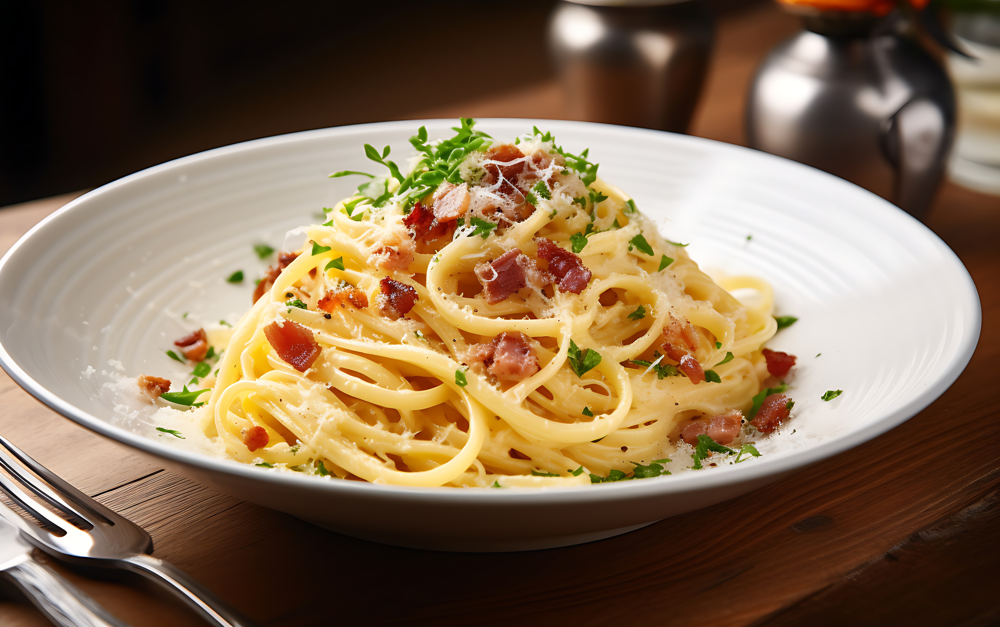

Home
Spaghetti Carbonara

Spaghetti Carbonara is a classic Italian pasta dish that is simple yet incredibly delicious.
Made with eggs, cheese, pancetta, and pepper, this creamy and flavorful dish is perfect for a quick weeknight dinner or a special occasion.
Follow this recipe to create an authentic Spaghetti Carbonara that will impress your family and friends.
Ingredients
- 200g spaghetti
- 100g pancetta or guanciale, diced
- 2 large eggs
- 50g Pecorino Romano cheese, grated
- 50g Parmesan cheese, grated
- 2 cloves garlic, peeled and left whole
- Freshly ground black pepper
- Salt
Instructions
- Bring a large pot of salted water to a boil. Add the spaghetti and cook according to the package instructions until al dente. Reserve about 1 cup of pasta water before draining.
- In a large skillet, heat a small amount of olive oil over medium heat. Add the whole garlic cloves and sauté until fragrant, then remove the garlic.
- Add the diced pancetta or guanciale to the skillet and cook until crispy. Remove from heat and set aside.
- In a bowl, whisk together the eggs, Pecorino Romano, Parmesan cheese, and a generous amount of freshly ground black pepper.
- Add the cooked spaghetti to the skillet with the pancetta and toss to combine. Remove from heat.
- Quickly pour the egg and cheese mixture over the pasta, tossing vigorously to coat the spaghetti without scrambling the eggs. Add reserved pasta water a little at a time to achieve a creamy consistency.
- Serve immediately with extra grated cheese and freshly ground black pepper on top.